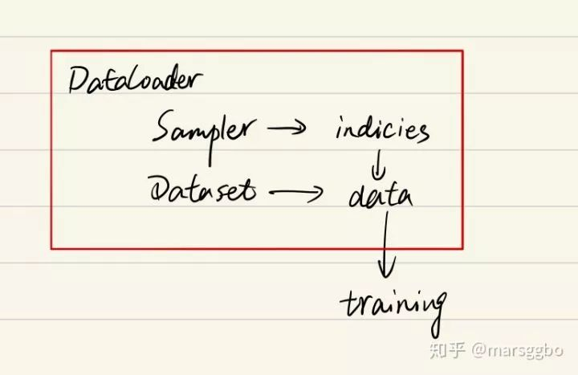

Dataset和DataLoader简介
Contents
Dataset和DataLoader简介#
在使用Pytorch构建和训练模型的过程中，经常需要把原始数据（文本格式数据等）转换为张量的格式，这时pytorch的数据导入功能便能发挥作用。
Pytorch导入数据主要依靠 torch.utils.data.DataLoader和 torch.utils.data.Dataset这两个类来完成，并采用以下步骤完成最终的数据读取。
1 pytorch输入数据pipline“三步走”策略#
这里主要引用了这篇blog的内容：https://blog.csdn.net/loveliuzz/article/details/108756253
一般pytorch的数据加载到模型的操作顺序如下：
创建一个 Dataset 对象，必须实现 __len__() ，__getitem__() 两个方法；
创建一个 DataLoader 对象，对 Dataset 对象进行迭代的，一般不需要事先实现里面其他方法了；
循环遍历DataLoader对象，将样本数据加载到模型中训练。
注：Dataset、DataLoader 均在 torch.utils.data 中定义，使用它们的时候代码会有如下形式：
from torch.utils.data.dataset import Dataset
from torch.utils.data.dataloader import DataLoader
dataset = MyDataset() # 第一步：构建 Dataset 对象
dataloader = DataLoader(dataset) # 第二步：通过Dataloader来构建迭代对象
num_epoches = 100
for epoch in range(num_epoches):
for i, data in enumerate(dataloader):
# 训练代码
数据集遍历一般化流程：

for i, data in enumerate(dataloader): 会调用dataloader 的 iter() 方法，产生了一个DataLoaderIter（迭代器），这里判断使用单线程还是多线程，调用 DataLoaderIter 的 next() 方法来得到 batch data 。在__next__() 方法中使用 __next_index()方法调用sampler（采样器）获得index索引，接着通过 Dataset_fetcher 的 fetch() 方法根据index（索引）调用dataset的 getitem() 方法，然后用 collate_fn 把它们打包成batch。当数据读完后， next() 抛出一个 StopIteration 异常，for循环结束，dataloader 失效。
2 Dataset#
torch.utils.data.Dataset是一个抽象类, 自定义的Dataset需要继承它并且实现两个成员方法:
getitem()
len()
第一个最为重要, 即每次怎么读数据，比如对于一个图片：
def __getitem__(self, index):
img_path, label = self.data[index].img_path, self.data[index].label
img = Image.open(img_path)
return img, label
可以看到，img是模型训练的输入数据，label是模型训练的输出数据。
第二个比较简单, 就是返回整个数据集所有样本的个数，比如：
def __len__(self):
return len(self.data)
3 Dataloader#
torch.utils.data.DataLoader类定义为:
class torch.utils.data.DataLoader(dataset, batch_size=1, shuffle=False, sampler=None, batch_sampler=None, num_workers=0, collate_fn=
可以看到, 主要参数有这么几个:
dataset : 即上面自定义的dataset.
collate_fn: 这个函数用来打包batch, 后面详细讲.
num_worker: 非常简单的多线程方法, 只要设置为>=1, 就可以多线程预读数据啦.
这个类一共干了两件事:
定义了一堆成员变量, 到时候赋给torch.utils.data.dataloader.DataLoaderIter 然后有一个iter() 函数, 把自己 “装进” DataLoaderIter 里面.
def iter(self): return DataLoaderIter(self)
首先我们看一下DataLoader.__next__的源代码长什么样,为方便理解我只选取了num_works为0的情况（num_works简单理解就是能够并行化地读取数据）。
class DataLoader(object):
...
def __next__(self):
if self.num_workers == 0:
indices = next(self.sample_iter) # Sampler
batch = self.collate_fn([self.dataset[i] for i in indices]) # Dataset
if self.pin_memory:
batch = _utils.pin_memory.pin_memory_batch(batch)
return batch
在阅读上面代码前，我们可以假设我们的数据是一组图像，每一张图像对应一个index，那么如果我们要读取数据就只需要对应的index即可，即上面代码中的indices，而选取index的方式有多种，有按顺序的，也有乱序的，所以这个工作需要Sampler完成，具体的细节如果我们不重写新函数就不用管。
然后Dataset和DataLoader在什么时候产生关系呢？就是我们已经拿到了indices，那么下一步我们只需要根据index对数据进行读取即可了。
再下面的if语句的作用简单理解就是，如果pin_memory=True,那么Pytorch会采取一系列操作把数据拷贝到GPU，总之就是为了加速。
所以有这样的关系图：

最后，Dataset和DatasetLoader及数据集切分的基本使用流程如下：

Dataset是一个抽象类，需要派生一个子类构造数据集，需要改写的方法有__init__，__getitem__等。
DataLoader是一个迭代器，方便我们访问Dataset里的对象
如果大家对以上内容感兴趣，接下来这里有些根据网上查的资料总结下的dataset，dataloader等的用法可供大家参考。
参考资料有：